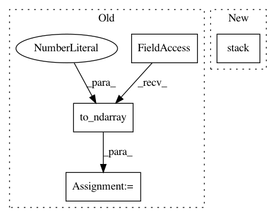

2ffc1c8714980948b42c088880caa64bcc373a5e,geomstats/geometry/special_orthogonal.py,_SpecialOrthogonal3Vectors,vector_from_skew_matrix,#Any#,832
Before Change
vec : array-like, shape=[..., dim]
Vector.
vec_1 = gs.to_ndarray(skew_mat[:, 2, 1], to_ndim=2, axis=1)
vec_2 = gs.to_ndarray(skew_mat[:, 0, 2], to_ndim=2, axis=1)
vec_3 = gs.to_ndarray(skew_mat[:, 1, 0], to_ndim=2, axis=1)
vec = gs.concatenate([vec_1, vec_2, vec_3], axis=1)
After Change
vec : array-like, shape=[..., dim]
Vector.
vec = gs.stack([
skew_mat[..., 2, 1], skew_mat[..., 0, 2], skew_mat[..., 1, 0]])
return gs.transpose(vec)
@geomstats.vectorization.decorator(["else", "matrix", "output_point"])
In pattern: SUPERPATTERN
Frequency: 3
Non-data size: 4
Instances
Project Name: geomstats/geomstats
Commit Name: 2ffc1c8714980948b42c088880caa64bcc373a5e
Time: 2020-09-29
Author: nicolas.guigui@inria.fr
File Name: geomstats/geometry/special_orthogonal.py
Class Name: _SpecialOrthogonal3Vectors
Method Name: vector_from_skew_matrix
Project Name: geomstats/geomstats
Commit Name: 6f52d73623e0f7480061756fbe6e784c4b9854e6
Time: 2020-04-25
Author: nicolas.guigui@inria.fr
File Name: geomstats/geometry/beta_distributions.py
Class Name: BetaMetric
Method Name: inner_product_matrix
Project Name: geomstats/geomstats
Commit Name: 109f18b6bce4b72299f6b9aa4cc94bab2d283190
Time: 2020-04-25
Author: nicolas.guigui@inria.fr
File Name: geomstats/geometry/beta_distributions.py
Class Name: BetaMetric
Method Name: christoffels